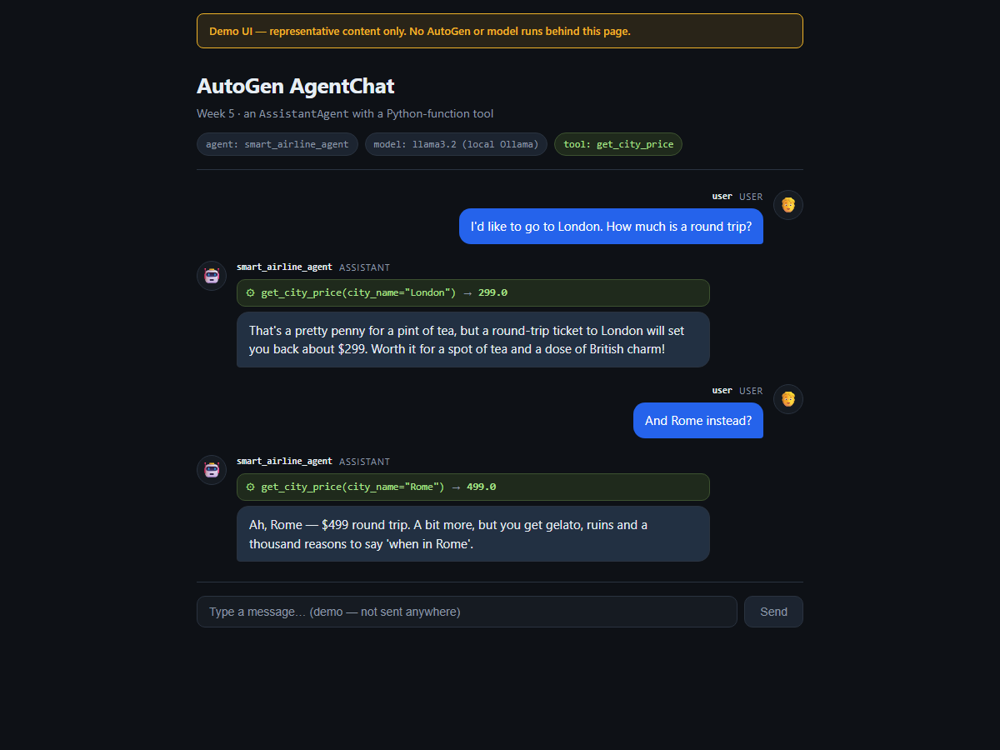

Week 5 · Project Build — the Agent World, Step by Step
Build the AutoGen Core "world" from an empty folder with uv: a creator agent, message templates and collaborating agents, plus a small React demo UI.
Build it yourself · Python + uv (+ a React demo UI)This is the Week 5 project: the Agent World — a small society of AutoGen agents that invent business ideas and refine each other's. A Creator agent reads a template agent file, writes a brand-new agent as Python code, saves it, registers it on a shared runtime, and asks it for an idea. Each new agent sometimes bounces its idea off another agent to improve it. Run twenty of them and you get twenty generated agents and twenty idea files — agents that write and launch other agents. That is the Week 5 build.
AutoGen is Python-primary: the course uses the Python packages, and there is no first-class JavaScript port, so the two tracks are not the same program in two languages here:
- Track A — Python + uv: the real project. A
messagesmodule, a template agent, aCreatoragent, and aworld.pythat spins up N agents over a gRPC runtime. - Track B — a small React demo UI: not an AutoGen port, but a TypeScript page that shows what an AgentChat exchange looks like — user and assistant messages plus a tool-call badge — so the week has a UI to look at.
The core idea of Track A is agents as message handlers on a runtime. In AutoGen Core, an agent is a RoutedAgent with a message handler; you register agent types on a runtime, address them by AgentId, and they talk by sending each other messages. The Creator uses that to register agents it just wrote, and the generated agents use it to pass ideas around. The distributed gRPC runtime lets those agents live in separate processes.
Build it step by step
A runnable version of Week 5 lives in week5-py/. It runs with no paid keys by using AutoGen's native Ollama client (OllamaChatCompletionClient(model="llama3.2"), which the course code itself already shows), so you can watch real AutoGen run:
# 1. Install Ollama from https://ollama.com, then pull the model it uses
ollama pull llama3.2
# 2. Install dependencies (UV_NATIVE_TLS=1 avoids corporate TLS errors)
cd week5-py
UV_NATIVE_TLS=1 uv sync
# 3. Run the examples (one at a time - they share the single Ollama queue)
uv run python src/lab1_agentchat.py # AgentChat: a plain agent, then one with a Python-function tool
uv run python src/lab3_core.py # AutoGen Core: a RoutedAgent, then rock-paper-scissors over the runtimeWhat was verified locally against Ollama: the AgentChat conversational examples in lab 1 (a plain AssistantAgent, then one given a get_city_price tool — on a good run it fires the ToolCallRequestEvent and quotes the real price), and a Core message-passing example in lab 3 (a RoutedAgent with a @message_handler on a SingleThreadedAgentRuntime, then three agents talking over the runtime). What was shown as in the course but not run live here: the distributed gRPC runtime (GrpcWorkerAgentRuntime + GrpcWorkerAgentRuntimeHost), the agent-writing world capstone, and the multimodal messages — they need extra infrastructure (a running gRPC host, multiple worker processes) or a vision model. Honest caveat: llama3.2 is a small (3.2B) model that calls tools inconsistently and does not always obey "one word only"; the scripts print what the model actually did, and RUN-NOTES.md records both a good run and a wrong one.
New to agents-on-a-runtime? What it is and why it matters
In AutoGen Core you do not call an agent like a function. You register an agent type on a runtime, and then send it a message addressed by an AgentId (a type plus a key). The runtime delivers the message to the matching agent's @message_handler, which may reply or send more messages. This indirection is what makes the Week 5 world possible: the Creator can register an agent it wrote a second ago and immediately message it, and a distributed runtime can place those agents in different processes while the code stays the same.
Track A - Python + uv (AutoGen: messages, a template agent, a creator, world.py)
- Scaffold the project. Either start fresh with
uv init agent-world, or clone the course repo and open its5_autogenfolder.uvcreates the project and manages a local.venvfor you. - Add the dependencies:
uv add autogen-agentchat autogen-core "autogen-ext[openai,ollama,grpc]" python-dotenv.autogen-coreis the runtime and message plumbing,autogen-agentchatgives theAssistantAgenteach agent wraps, andautogen-extcarries the model clients (OpenAI, Ollama) and the gRPC runtime. - Create a
.envfile with your key (never commit it). The course's world uses hosted OpenAI; to run the labs free, point the model client at Ollama instead:OPENAI_API_KEY=sk-... # or, for the labs, use AutoGen's Ollama client in code: # OllamaChatCompletionClient(model="llama3.2") - Write the
messagesmodule. Define a tiny@dataclass Messagewith a singlecontent: strfield — the one message type every agent sends and receives — and afind_recipient()helper that lists theagent*.pyfiles on disk, drops the templateagent, and returns a randomAgentId. This is how one agent picks another to bounce an idea off. - Write the template agent,
agent.py. ARoutedAgentsubclass namedAgentwith asystem_messagegiving it a personality (interests, risk appetite, weaknesses) and a@message_handlerthat forwards the message to a wrappedAssistantAgent. With a 50% chance it callsmessages.find_recipient()and usesself.send_message(...)to ask another agent to refine the idea, then returns the result. Keep the class name and method signatures fixed — the Creator relies on them. - Write the
Creatoragent,creator.py. AnotherRoutedAgentwhosesystem_messagetells it to read the template and write a new agent with a different personality, "responding only with the python code". Its handler readsagent.py, asks its model for the new code, writes it to the givenagentN.py,importlib.import_modules it, registersmodule.Agenton the runtime, and sends the fresh agent "Give me an idea". - Write
world.py— the orchestrator. Start aGrpcWorkerAgentRuntimeHostonlocalhost:50051and aGrpcWorkerAgentRuntimeworker connected to it. Register theCreator, thenasyncio.gatheroverHOW_MANY_AGENTS(20): for eachi, send the Creator"agent{i}.py"and write its returned idea toidea{i}.md. Stop the worker and host at the end. - Run it:
uv run python world.py. The Creator writesagent1.py…agent20.py, each one is registered and asked for an idea, some bounce their idea off a sibling, and you end up withidea1.md…idea20.md. (This needs the gRPC host and real model calls, which is whyweek5-py/verifies the AgentChat and Core pieces instead.)
The full, verified code for the messages module, the template agent, the Creator and the world is embedded line by line on the Day 5 page, with the AgentChat and Core building blocks on the Day 1 and Day 3 pages — build those first; this page is the map that joins them into one project.
find_recipient()) to improve before returning it. No agent calls another directly — every hop is a message addressed by AgentId on the runtime.Track B - React demo UI
Track B is the real week5-ts/ project, and it is deliberately a demo UI, not AutoGen in TypeScript. AutoGen is Python-primary; there is a .NET AutoGen but no first-class JS port. This page is a static React SPA whose content is hard-coded in src/data.ts — no AutoGen package, no model client, no backend. It mirrors the shape of the Week 5 lab 1 exchange so the week has something to look at.
- Scaffold a React + TypeScript app with Vite:
npm create vite@latest week5-ts -- --template react-ts cd week5-ts npm install - Keep the dependencies tiny. This is a static page, so it needs only
reactandreact-domat runtime, plus Vite, TypeScript and@vitejs/plugin-reactas dev tools (all added by the Vite template). There is no server and no network call. - Create
src/data.ts— the representative content. DeclareChatMessageandToolCalltypes, anAGENT_NAME(smart_airline_agent) andMODEL(llama3.2 (local Ollama)), and aconversationarray: the user asks about London, the assistant callsget_city_priceand quotes299.0, then the same for Rome at499.0— the exact shape the Python lab produces. - Build
src/App.tsx. ABubblecomponent renders each message with itssourceand role; aToolCallBadgeshows a tool call asname(args) → result, matching AgentChat's inner events. Add a visible "Demo UI — representative content only" banner and a disabled composer so no one mistakes it for a live chat. - Style it in
src/styles.csswith light/dark-aware colours, so the page reads well in either theme. - Check and preview. The
package.jsondefines the scripts:
Run"scripts": { "dev": "vite", "typecheck": "tsc --noEmit -p tsconfig.json", "build": "tsc --noEmit -p tsconfig.json && vite build", "preview": "vite preview --port 4173" }npm run typecheckandnpm run build(both must be clean), thennpm run previewto serve the built page for the screenshot.
data.ts contains — nothing runs behind it.Built and previewed, the demo page looks like this:

src/App.tsx), serving static content from src/data.ts. It illustrates an AgentChat exchange with a tool-call badge; it is not connected to AutoGen or any model.- The Agent World: a
Creatoragent that writes new agent files, registers them on a runtime, and asks each for a business idea — agents that make other agents. - AutoGen Core building blocks: a
@dataclassmessage,RoutedAgentsubclasses with@message_handler, addressing byAgentId, andsend_messagebetween agents. - A
GrpcWorkerAgentRuntimeHost+GrpcWorkerAgentRuntimeso twenty agents can run across processes and produce twenty idea files. - Track A in Python + uv is the real project; a free local version in
week5-py/verifies the AgentChat and Core pieces against Ollama. - Track B (
week5-ts/) is a small React demo UI showing an AgentChat-style exchange with a tool-call badge — clearly labelled as representative, not an AutoGen port. - Full, line-by-line code is on the Day 1, Day 3 and Day 5 pages.